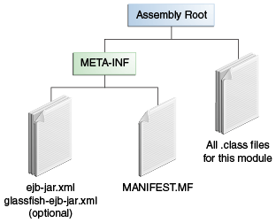

package com.example.cart;
@Stateless
public class CartBean { ... }
|
Plataforma Java, Edición Empresarial (Java EE) 8 El Tutorial de Java EE |
| Anterior | Siguiente | Contenidos |
Esta sección explica cómo se pueden empaquetar los beans enterprise en módulos EJB JAR o WAR. Incluye las siguientes secciones:
Un archivo EJB JAR es portátil y se puede utilizar para varias aplicaciones.
Para ensamblar una aplicación Java EE, empaque uno o más módulos, como archivos EJB JAR, en un archivo EAR, el archivo de almacenamiento que contiene la aplicación. Al implementar el archivo EAR que contiene el archivo JAR EJB del Enterprise Bean, también implementa el Enterprise Bean en GlassFish Server. También puede implementar un EJB JAR que no esté incluido en un archivo EAR. La Figura 5-2 muestra el contenido de un archivo JAR EJB.

Los beans empresariales suelen proporcionar la lógica empresarial de una aplicación web. En estos casos, empaquetar el bean empresarial dentro del módulo WAR de la aplicación web simplifica la implementación y la organización de la aplicación. Los Enterprise beans se pueden empaquetar dentro de un módulo WAR como archivos de clase de lenguaje de programación Java o dentro de un archivo JAR que está empaquetado dentro del módulo WAR.
Para incluir archivos de clase de Enterprise Bean en un módulo WAR, los archivos de clase deben
estar en el directorio WEB-INF/classes.
Para incluir un archivo JAR que contiene beans de empresa en un módulo WAR, agregue el JAR al
directorio WEB-INF/lib del módulo WAR.
Los módulos WAR que contienen beans de empresa no requieren un descriptor de implementación
ejb-jar.xml. Si la aplicación usa ejb-jar.xml, debe estar ubicada en
el directorio WEB-INF del módulo WAR.
Los archivos JAR que contienen clases de enterprise beans empaquetados dentro de un módulo WAR
no se consideran archivos EJB JAR, incluso si el archivo JAR empaquetado se ajusta al formato de
un archivo EJB JAR. Los beans de empresa contenidos en el archivo JAR son semánticamente
equivalentes a los beans de empresa ubicados en el directorio WEB-INF/classes del
módulo WAR, y el espacio de nombres del entorno de todos los beans de empresa está dentro del
ámbito del módulo WAR.
Por ejemplo, suponga que una aplicación web consta de un enterprise bean de carro de la compra, un enterprise bean de procesamiento de tarjetas de crédito y un front-end de servlet Java. El bean de carrito de compras expone una vista local, sin interfaz y se define de la siguiente manera:
package com.example.cart;
@Stateless
public class CartBean { ... }
El bean de procesamiento de tarjetas de crédito está empaquetado dentro de su propio archivo
JAR, cc.jar, expone una vista local, sin interfaz, y se define de la siguiente
manera:
package com.example.cc;
@Stateless
public class CreditCardBean { ... }
El servlet, com.example.web.StoreServlet, maneja la interfaz web y usa tanto
CartBean y CreditCardBean. El diseño del módulo WAR para esta
aplicación es el siguiente:
WEB-INF/classes/com/example/cart/CartBean.class
WEB-INF/classes/com/example/web/StoreServlet
WEB-INF/lib/cc.jar
WEB-INF/ejb-jar.xml
WEB-INF/web.xml
| Anterior | Siguiente | Contenidos |